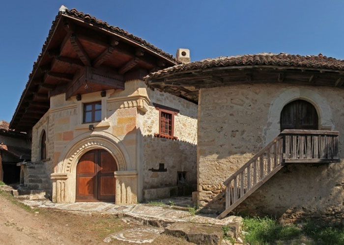
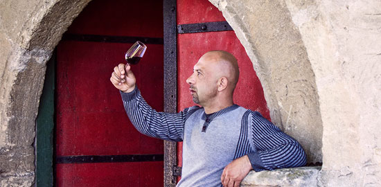
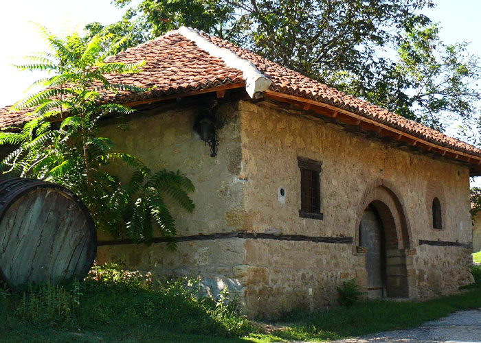
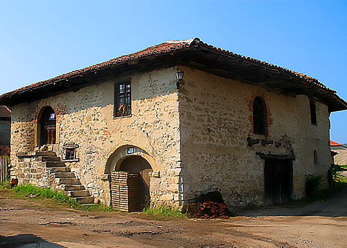

Šest generacija jednog podruma
Priča porodice Perić počinje 1887. godine na ulazu u Rajačke pimnice i traje bez prekida do danas.
Kuća sagrađena za vino
Pimnica Perić se nalazi na samom ulazu u kompleks Rajačkih pimnica. Sagrađena je 1887. godine, u vreme kada je filoksera uništila francuske vinograde, a negotinska vina smatrana jednim od najboljih u Evropi.
Podrum za čuvanje vina ukopan je 150 cm u zemlju, a zidovi su debeli 70 cm. Zato je temperatura u njemu ista i leti i zimi, a vino mirno sazreva u idealnim uslovima.
Uz podrum, pimnica ima veliku terasu za ručavanje i degustaciju, ljuljašku sa predivnim pogledom, ležaljku u hladu vinove loze i malu pušnicu u kojoj dimimo meso.

Od kraljevskih trpeza do vaše čaše
Podiže se pimnica
Na ulazu u Rajačke pimnice gradi se kamena kuća sa podrumom ukopanim u zemlju.
Vino za carski Beč
Negotinska vina služe se na kraljevskim trpezama, a Austrougarska ima konzulat u Negotinu koji pomaže izvoz vina do Beča i dalje u evropske metropole.
Bez ijednog prekida
Pimnica radi neprekidno od osnivanja. Vino se pravi tradicionalnim metodama koje se prenose s kolena na koleno.
Šesta generacija
Željko Perić, šesti domaćin pimnice, sve više neguje autohtone sorte ovog vinogorja (tamjaniku, prokupac, začinjak i bagrinu) i otvara vrata gostima u pimnici i u porodičnom domaćinstvu u selu.

Željko Perić
„Ovo je 130 godina tradicije koju nismo nasledili, već stekli napornim radom više generacija porodice Perić.”
U pimnici vas dočekuje sam domaćin. Uz čašu vina iz podruma ispričaće vam priču o kraju, o sortama i o porodici koja ovde generacijama živi uz vinograd.
Naselje od kamena, sagrađeno za vino
Rajačke pimnice su kompleks vinskih podruma oko dva kilometra zapadno od sela Rajac, na vrhu brežuljka Beli breg. Više od dve stotine zgrada, većinom sa vinskim podrumima, okupljeno je oko centralnog trga sa česmom. Građene su od tesanog kamena i brvana i pokrivene ćeramidom.
Na nekim pimnicama uklesana je godina gradnje, a većina potiče iz druge polovine 19. i prve polovine 20. veka. Za vina iz ovog kraja kaže se da najlepše mirišu, da imaju lekovita svojstva i da podstiču da se dobro misli i još bolje peva.
Najpoznatija bela vina kraja prave se od smederevke, bagrine i bele tamjanike, a crvena od prokupca, crnog burgundca i game.
Na jugozapadnom kraju kompleksa nalazi se seosko groblje sa oko dve stotine odlično očuvanih nadgrobnih spomenika iz 19. veka. Rajačke pimnice su kandidat za Listu svetske kulturne baštine UNESCO.




Tri stvari koje se ne kupuju
130 godina rada
Tradicija koju nismo nasledili, već stekli napornim radom više generacija porodice Perić.
Autentično mesto
Jedinstveno u svetu: podrum i restoran u gradu vina od kamena, a smeštaj u mirnom selu.
Priroda i trpeza
Tradicionalna organska hrana, vrhunsko vino, nedirnuta priroda i čist vazduh.
Žali bože izgubljenog vremena i gutljaja koji ni prineti nisu rajačkom vinu. Greh je tuđe ceniti, a svoje zaboraviti.Jovan Memedović
Porodično mesto sa sopstvenim vinogradom i vrhunskim vinom.Nemanja

Najavite se, čekamo vas
Za smeštaj, degustaciju, ručak ili proslavu najbrže je da nas pozovete ili pišete porukom. Rado ćemo vam predložiti termin i ponudu po meri.
Otvoreno 365 dana u godini · Cene na upit